Arte cinematografica, tecnologia e produzione
Come nasce un film: dall'idea alla distribuzione, passando per il lavoro della troupe e le macchine da presa.
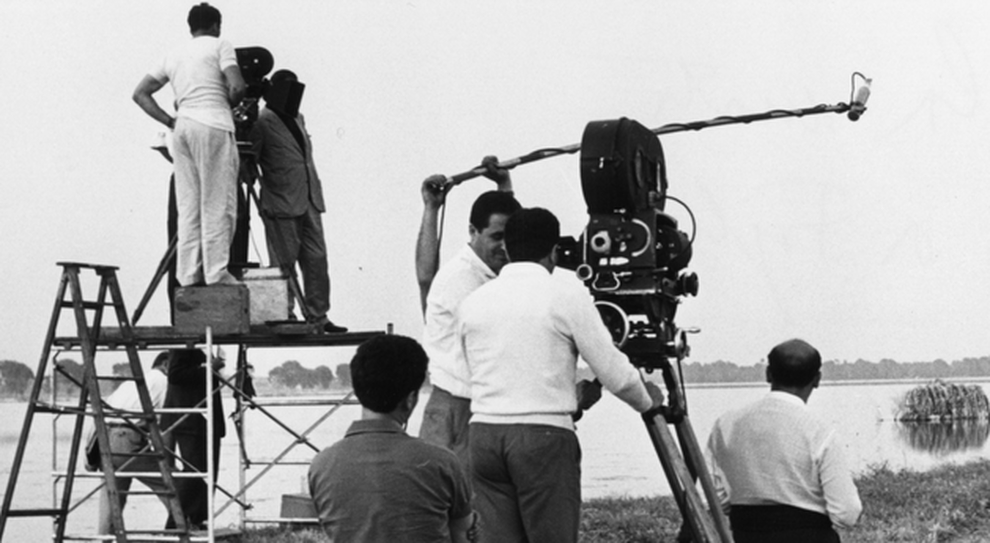
Guida digitale all'analisi del linguaggio cinematografico
Come nasce un film: dall'idea alla distribuzione, passando per il lavoro della troupe e le macchine da presa.

Analisi di come gli elementi del film interagiscono tra loro per creare un'esperienza coerente.
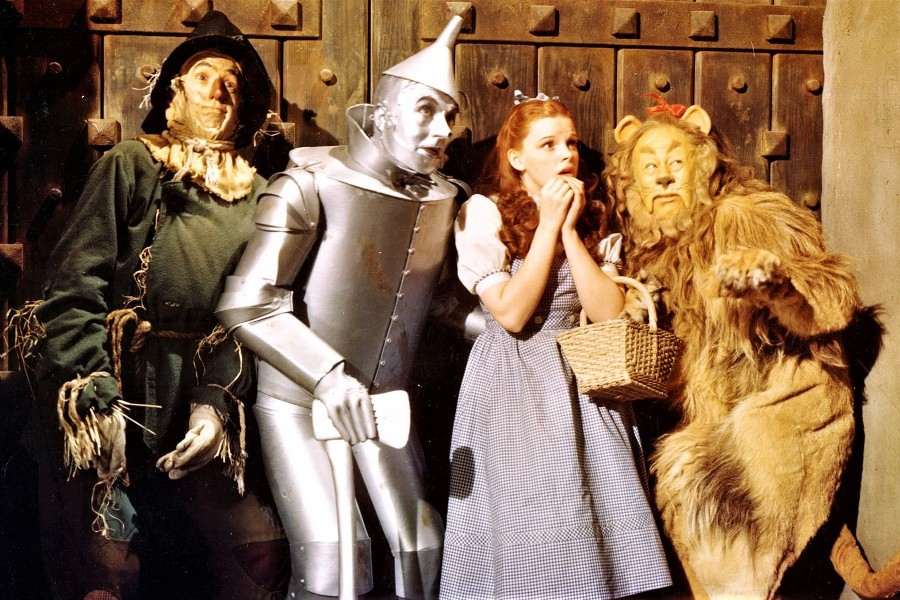
Lo studio del racconto: trama, tempo, spazio e la costruzione della storia cinematografica.
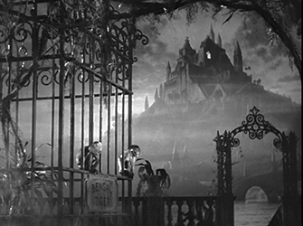
Analisi di tutto ciò che appare nell'inquadratura: scenografia, luci, costumi e recitazione.
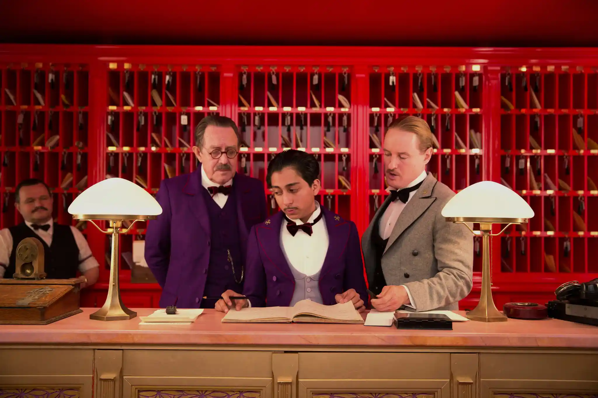
L'arte della ripresa: l'uso delle lenti, il colore, i movimenti di macchina e la composizione dell'immagine.
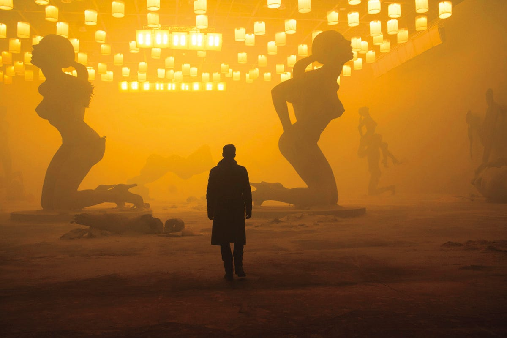
Unire le inquadrature: le relazioni spaziali, temporali e ritmiche tra i diversi tagli di un film.
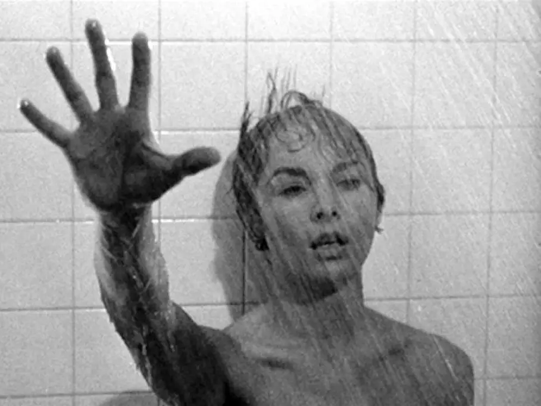
L'importanza della colonna sonora, del doppiaggio e degli effetti sonori nell'esperienza filmica.
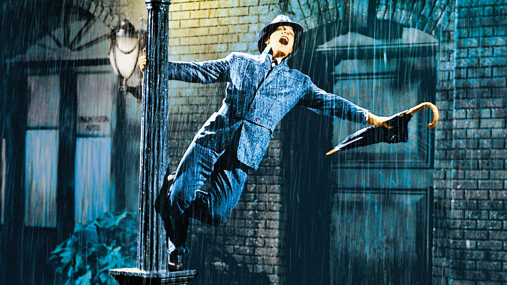
Come i registi coordinano tutte le tecniche per creare uno stile unico e riconoscibile.
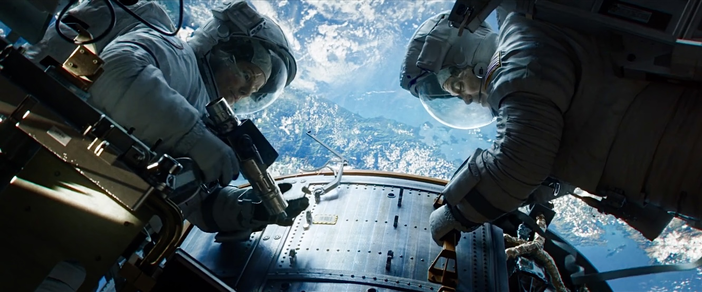
Analisi dei modelli narrativi e visivi dei grandi generi: dal Western all'Horror, fino al Musical.
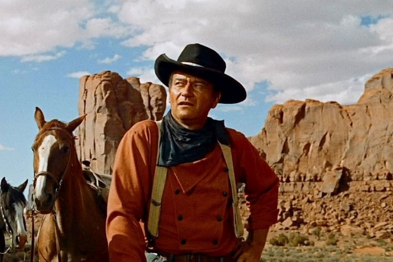
Oltre il cinema di finzione: esplorazione di forme non tradizionali e creative della visione.
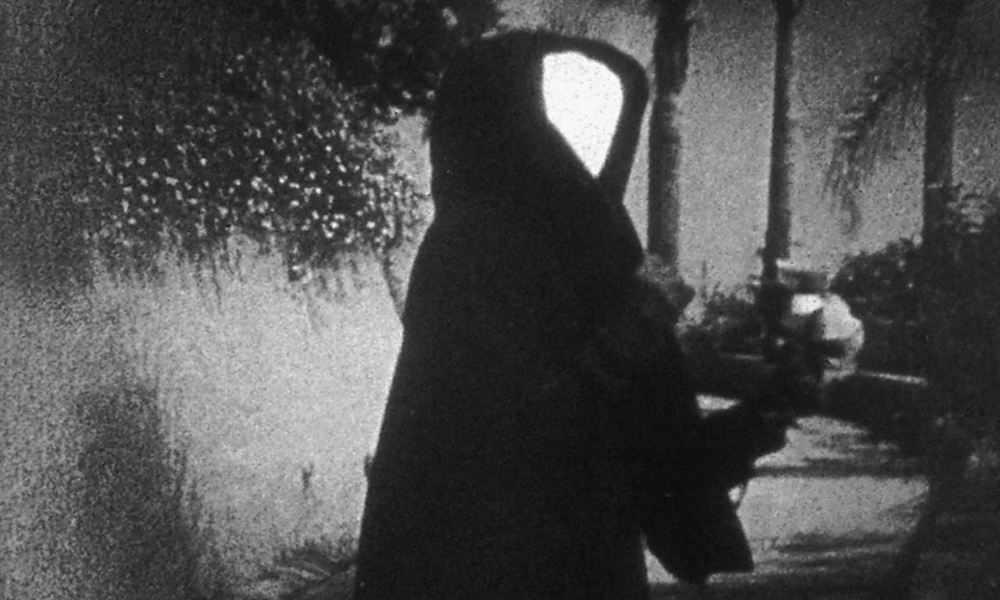
Un viaggio cronologico attraverso i movimenti che hanno cambiato il modo di fare film.
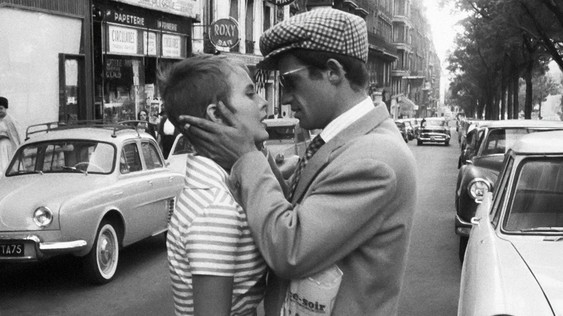
Guida pratica su come guardare un film con occhio critico e strutturare un saggio di analisi.
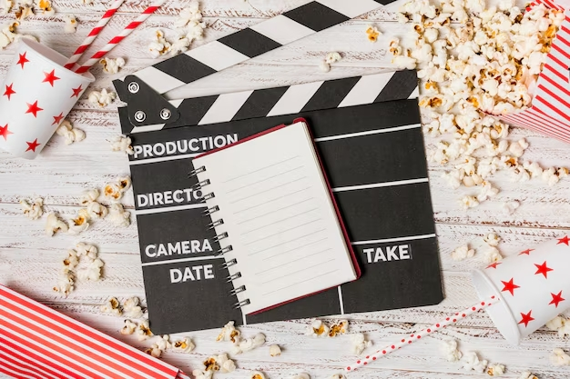